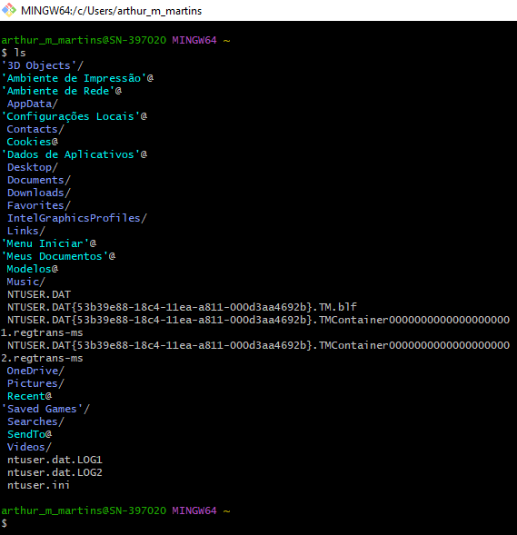

Comandos
Clear - limpa a tela
Ls - Exibe uma lista de arquivos e subdiretórios em um diretório.
Echo - Exibe mensagens ou ativa/desativa o eco de comandos.
fatattr - Exibe ou altera atributos de arquivos.
Cp - Copia um ou mais arquivos para outro local.
shred - Exclui um ou mais arquivos.
MKDIR - Cria um diretório.
mv - Altera o nome de um ou mais arquivos.
xdg-open - Inicia uma janela separada para executar um programa ou comando especificado.
CD - Exibe o nome do diretório atual ou faz alterações nele.
Set - Exibe, define ou remove variáveis de ambiente do Windows.
du -a - Exibe graficamente a estrutura de diretórios de uma unidade ou caminho.
cat /etc/os-release* \n uname -a - Exibe a configuração e propriedades específicas da máquina.
hostnamectl - Exibe a versão do Windows.
cat - Exibe o conteúdo de um arquivo de texto.
Set - Exibe, define ou remove variáveis de ambiente do Windows.
-f - Substitui arquivos.
Pause() - Suspende o processamento de um arquivo em lotes e exibe uma mensagem.
Info - Fornece informações de ajuda sobre comandos do Windows.
pwd - Diretorio atual.
tput - Define as cores padrão do primeiro plano e da tela de fundo do console.

Sistema de versionamento
O versionamento de software é um processo de controle de versões estabelecido por meio de numerações diferentes. Isso permite que os programadores saibam quando e quais alterações foram realizadas, acompanhando as mudanças aplicadas no software. Além disso, permite que os usuários finais identifiquem as novidades e reconheçam as versões mais atualizadas.